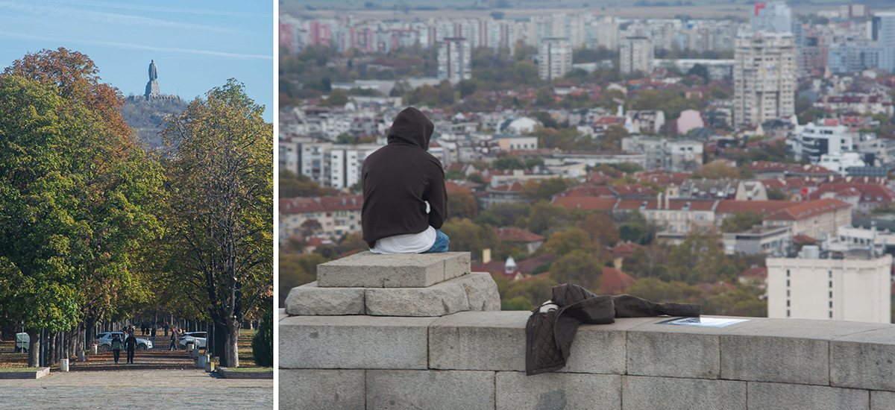

An Architectural Fiction of plovdiv

Through combined experiments of panoramic photography, speculative design, AI image generation, and Web-VR development, this project animates Plovdiv's recursive urban transformation towrads its canceled futures. The resulting Web-VR scenes will match the 4 selected views from Plovdiv’s two iconic hills: one from the terrace of Dzambaz Tepe in the touristy old town and three from Burnardzhika Tepe that overlooks the greater metropolitan area. The viewpoint selection is made with curatorial measures for the project’s on-site access: the former serves as a tourist hook to introduce the concept and the latter delivers broader panoramas of the city. When visiting these viewpoints, audiences can find QR-code access to the corresponding scenes and see Plovdiv's transformation between the present images and their canceled futures on their mobile screen, meanwhile having the real-world counterpart to complete the immersive experience.
 The 4 selected viewpoints for Web-VR experience.
The 4 selected viewpoints for Web-VR experience. Examples of views to be transformed.
While waiting for the QR-code stickers to be installed in November 2023, you can preview the animations by clicking the [SCENES] below.
It is encouraged to visit the viewpoints and match the Web-VR scene with your real-world view for immersive experience.
Otherwise, just imagine yourself standing on site and have fun :)
Note: the Google Map pin points do not indicate precise viewpoint locations, use the zoom-in satellite views as references when you approach the spots.